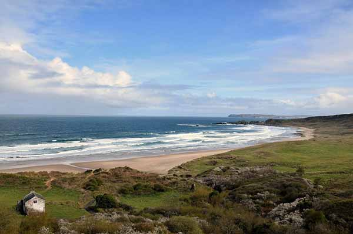

Discover Whitepark Bay – A Guide To The Breathtaking Whitepark Bay Beach In Antrim
The spectacular sandy beach forms a white arc between two headlands on the North Antrim coast. In this secluded location, even on a busy day there is plenty of room for quiet relaxation.
The stunning Whitepark Bay Beach in Antrim is one of the most beautiful beaches in Ireland. Plan your adventure today!
This spectacular sandy beach forms a white arc between two headlands on the North Antrim Coast. Its secluded location means that even on a busy day there is plenty of room for quiet relaxation. White Park Bay has been in the care of the National Trust since 1938 and it remains one of the most natural coastline sites in N Ireland. The beach is backed by ancient dunes and species rich chalk grasslands, which are carpeted in rare plants, including many orchids. The site is also fossil rich with archaeological evidence everywhere.
Located in Ballintoy, on the north Antrim coast, Whitepark Bay is 6.5 miles east of the Old Bushmills Distillery and 10 minutes’ drive from the Giant’s Causeway. If you’re driving from Belfast, it takes about 75 minutes.
1. Soak up the scenery from the viewpoint
Whitepark Bay Beach is frequently the subject of local artworks as it is truly breathtaking. Set in an Area of Outstanding Natural Beauty, the best view is from the lay-by on the clifftop above the beach.
The curving light-coloured sand is backed with white chalk cliffs and topped by lush green pastures in either direction. Many people drive down at sunset as it is one of the great spectacles of this coastline.
Turn around to face inland and you’ll see an ancient cairn or stone hut. It is a passage grave, situated here to perfectly capture the sun’s rays on the Midsummer Solstice.
2. Head off on the walk
Once you’ve had your fill of the view, the clifftop walk beckons. The out-and-back walk is 1.4 miles each way. Descend the steps from the car park/ viewpoint and follow the winding lane past the derelict Youth Hostel and 18th century “hedge school” building nearby.
Continue to the beach, then turn right and walk east along the sand for about a mile. You’ll be accompanied by rolling Atlantic waves and seabirds.
At the headland, turn and retrace your steps or continue to Ballintoy Harbour (an extra mile) which is only walkable at low tide.
3. Watch out for the cows… yes, cows!
Cattle frequently roam across the sand, making an incongruous sight. In fact, they are said to be the most photographed cows in Northern Ireland!
Farmers are allowed to let their cattle roam and graze on the dunes as part of a nature conservation management agreement that helps keep the grass short.
This beautiful area is also rich in flora and fauna including rare orchids. Along with grazing farm animals and wild rabbits, look out for gannets and terns diving in the waves. The little wading birds that nest in the nearby dunes are ringed plovers.
Definitely worth the visit if you're looking for a quieter beach, with stunning views and even it's own herd of cows pottering around! Even on a holiday day there were few people around, so grab a book and soak up the peace and quiet

Whitepark Bay beach is backed by ancient dunes that provide a range of rich habitats, a haven for wildlife, with diverse habitats that house butterflies, orchids, birds, otters and sea life.
Enjoy lazy summer days, picnics, making sandcastles and long walks. You'll find that even on a busy day, this is a secluded and relaxing place to be. Look for the Elephant Rock.